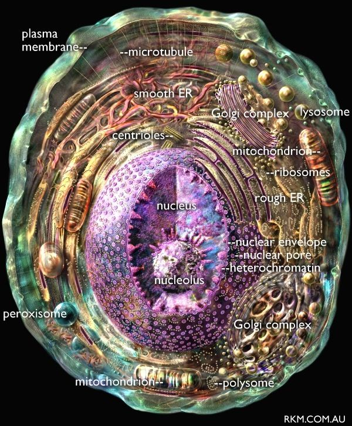

Biologie Lernpfad
Verstehe Schritt für Schritt, wie eine Zelle aufgebaut ist und warum Wasser bei der Osmose in Bewegung gerät.
Station 1
Zellen sind die kleinsten lebenden Bausteine eines Organismus. In ihnen laufen Stoffwechsel, Wachstum, Informationsspeicherung und Energieumwandlung ab. Wenn du den Aufbau einer Zelle verstehst, kannst du viele biologische Prozesse leichter erklären.
Station 2
Eine Zelle ist kein leerer Raum, sondern ein geordnetes System. Die Zellmembran grenzt sie nach außen ab, das Cytoplasma füllt den Innenraum, und Organellen übernehmen bestimmte Aufgaben.

Sie grenzt die Zelle ab und kontrolliert, welche Stoffe hinein- oder hinausgelangen.
Diese gelartige Grundsubstanz füllt die Zelle und ermöglicht Stofftransport im Inneren.
Er enthält die DNA und steuert viele Vorgänge, zum Beispiel Wachstum und Zellteilung.
Sie wandeln Energie aus Nährstoffen in nutzbare Energie für die Zelle um.
Station 3
Osmose ist die gerichtete Bewegung von Wasser durch eine semipermeable Membran. Diese Membran lässt Wasser hindurch, hält aber viele gelöste Teilchen zurück. Wasser bewegt sich dabei meistens zu der Seite, auf der mehr gelöste Teilchen vorhanden sind.
Station 4
Weil sie als semipermeable Grenze wirkt: Wasser kann hindurch, viele gelöste Stoffe nicht.
Zur Seite mit der höheren Konzentration gelöster Teilchen, bis ein Ausgleich entsteht.
Sie wird größer und baut Druck auf. Bei Pflanzenzellen sorgt dieser Druck für Stabilität.